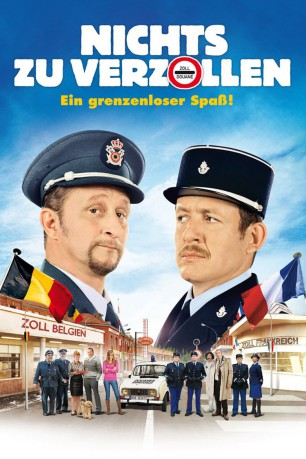

#820 Nichts zu verzollen
 
 IMDB-Wertung: 6.4 / 10
IMDB-Wertung: 6.4 / 10  Metascore: 0
Metascore: 0 
Zollbeamter Ruben hasst die Franzosen. Als mit dem Schengener Abkommen die Zollkontrollen an den Grenzen abgeschafft werden, bricht für ihn eine Welt zusammen. Franzose Mathias plagen andere Sorgen. Er ist in Rubens Schwester verliebt und fürchtet, dass ihre Zukunft am übersteigerten Patriotismus des Bruders scheitern könnte. Er fasst einen Plan, mit dem er Ruben für sich gewinnen will...
Jahr: 2010
Dauer: 108 Minuten
FSK: 12
Land: Frankreich Studio: Prokino FilmverleihTonspuren:
Untertitel:
Auflösung: 1080p (1920x824) Größe: 7362 MB
Genre: Komödie
Regisseur: Dany Boon
Drehbuch: Dany Boon, Yaël Boon
Soundtrack: Philippe Rombi
Darsteller:
Datei: X:\2010(N-Z)\Nichts zu verzollen (2010, FSK12, 1920x824).mkv seit 29.03.2015
Festplatte: HD 2010(G-Z)-2011(A-F)
 Es gibt insgesamt 115 Filme in der Gruppe '2010(N-Z)'
Es gibt insgesamt 115 Filme in der Gruppe '2010(N-Z)'